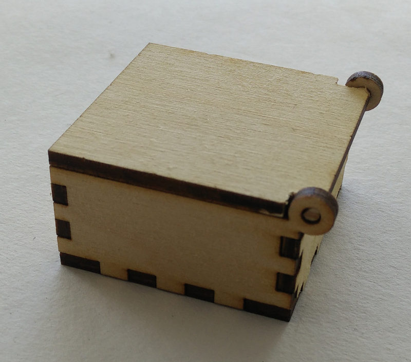
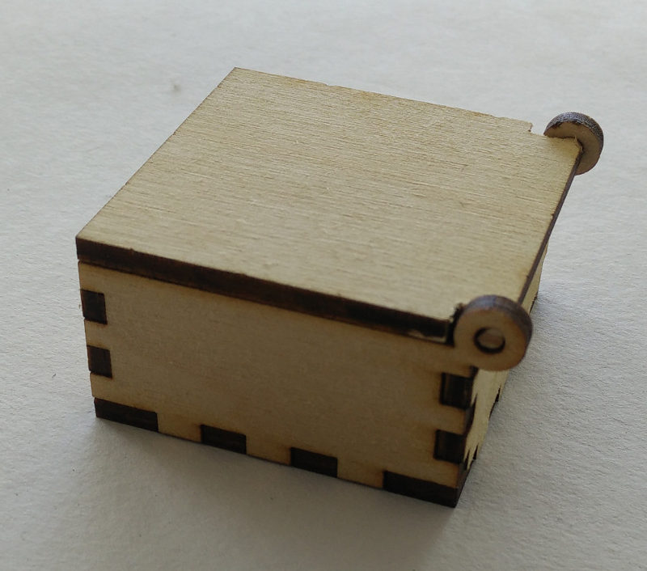

Computer-Controlled Cutting
This week we are going to make use the two computer-aided cutting machines available at the lab, the Trotec-Speedy 100​ laser cutter and the vinyl cutter. We are asked to make a pressfit construction kit using the laser cutter and something like a sticker, flexible PCB, stencil etc using the vinyl cutter. Before proceeding with the laser cutter I decided to get some numbers that will help me in designing the pressfit construct. I had some experience with both of the machines during the pre-academy.
Checking the laser cutter properties to fine tune the press-fit.
I made the following pattern to see how much material the laser beam removes on each pass, this data can be used to while designing the final press-fit construction. We will have a
chance for an intelligent guess rather than brute trial and error, to get a perfect fit. The design is made in antimony and is parametric, I can just change few numbers
to change the number of slits, slit width, depth etc.
Antimony files for the above design.
While creating the above video, I used a trick to batch crop the individual .png files. I opened the files in Gimp used the selection tool to get some parameters for the
command-line tool mogrify.
mogrify -crop [WIDTH]x[HEIGHT]+[X-offset]+[Y-offset] [FILES]

so the final command would be.
mogrify -crop 1858x944+32+78 *.png
This will crop all the .png files in the directory to a size we choose in the GIMP. One can modify this command accordingly. After that you can use ffmpeg to merge these
into a movie (I talked about this in
Week 2).
Laser Cutter: Water Bath For EDM PCB Mill
I decided to take one more step towards my final project. The PCB Mill requires a water bath, as the machining requires the EDM process to be under a dielectric liquid, water in our
case. So I decided to make a water bath using acrylic.
One of the assignment for this module is to make a press-fit construction set. And I made a container with a press-fit construction set, laser-cut acrylic (3mm).
For the last module, I have made a parametric design of an open-box, a 'square-container'. I used that design to cut acrylic using the Laser Cutter. On the second trial with the cardboard I had a very tight-fitting cardboard joint. In total I made four attempts, two on cardboard and two on acrylic. I used all scrap materials (so thats why some pieces are missing or irregularly shaped), as I didn't want to waste material for trial-and-error. But it turned out hat my second attempt itself was a success!!.


For all the design files, please refer the documentation of last module.
Now I need to seal the gaps to make this container water tight. I can do this with some Cyno-acrylic based glue or just acetone(dissolves acrylic) or I can make my on acrylic glue by dissolving a few pieces of acrylic scrap in acetone.
Improvised; Box With Lid.
I modified the OpenSCAD design file a little bit to add lid to the box.

Its Picture Time!
 


I made a bigger box 7cm x 7cm x 3cm, out of scrap, and I engraved my logo on top to hide some imperfections the plywood had before. I also engraved the logo on the smaller
box I made before.

Mutants
Many people liked my design and the fact that it's parametric. Many of them had different requirements too. Because of all these I had to make multiple version of these file. Some of
them are given below for reference.
module copy_mirror_adj(vec=[1,1,0])
{
children();
mirror([1,0,0])mirror(vec) children();
}
module copy_mirror_opp(vec=[0,1,0])
{
children();
mirror(vec) children();
}
$fn = 64; //smoother render, this number gives how many frangments are used for a circle
l = 155;
b = 915;
h = 130;
base_raise = 30; //height from the floor to the base plate
beam_width= .35;
thick = 6;
number_of_slots_base_len = 2;
number_of_slots_base_wid = 10;
number_of_slots_wall = 3;
num_slots_base_l = number_of_slots_base_len * 2;
num_slots_base_b = number_of_slots_base_wid * 2;
num_slots_wall_side = number_of_slots_wall * 2;
base_slot_width_l = l / ( num_slots_base_l + 1);
base_slot_width_b = b / ( num_slots_base_b + 1);
fit_base_slot_width_l = base_slot_width_l + beam_width;
fit_base_slot_width_b = base_slot_width_b + beam_width;
wall_slot_width = h / ( num_slots_wall_side + 1);
fit_wall_slot_width = wall_slot_width + beam_width;
slot_depth = thick;
wall_length = l;
wall_width = b;
wall_height = h;
//base
union(){
//fix corners
// copy_mirror_opp(vec=[1,0,0]) //bottom corners
// translate([-l/2-slot_depth,b/2,0])
// square(size=[slot_depth, slot_depth], center = false);
// copy_mirror_opp(vec=[1,0,0]) //top corners
// translate([-l/2-slot_depth,-b/2-slot_depth,0])
// square(size=[slot_depth, slot_depth], center = false);
translate([-l/2,-b/2,0])
union(){
for ( i = [ 1: 2: num_slots_base_l ] ) //top and bottom slots
{
translate ( [ 0, b, 0 ] )
translate ( [ (i+.5) * base_slot_width_l , slot_depth/2, 0 ] )
square ( size = [ fit_base_slot_width_l, slot_depth ], center = true );
translate ( [ 0, -slot_depth, 0 ] )
translate ( [ (i+.5) * base_slot_width_l , slot_depth/2, 0 ] )
square ( size = [ fit_base_slot_width_l, slot_depth ], center = true );
}
for ( i = [ 1: 2: num_slots_base_b ] ) //left and right slots
{
translate ( [ l, 0, 0 ] )
translate ( [ slot_depth/2, (i+.5) * base_slot_width_b, 0 ] )
square( size = [ slot_depth, fit_base_slot_width_b ], center = true );
translate ( [ -slot_depth, 0, 0 ] )
translate ( [ slot_depth/2, (i+.5) * base_slot_width_b, 0 ] )
square (size = [ slot_depth, fit_base_slot_width_b ], center = true );
}
square ( size = [l, b], center = false );
}
}
//wallls
//top and bottom walls
copy_mirror_opp(vec=[0,1,0])
translate([-l/2,-b/2,0])
union()
{
difference()
{
translate ( [ 0, b+1+2*thick, 0 ] )
square ( size = [wall_length, wall_height], center = false );
for ( i = [ 1: 2: num_slots_base_l ] )
{
translate ( [ 0, b + 1 + 2*thick + base_raise, 0 ] )
translate ( [ (i+.5) * base_slot_width_l, slot_depth/2, 0 ] )
square ( size = [ base_slot_width_l, slot_depth ], center = true );
}
}
for ( i = [ 0: 2: num_slots_wall_side ] )
translate ( [ l, b+1+2*thick, 0 ] )
translate ( [ slot_depth/2, (i+.5)*wall_slot_width, 0 ] )
square( size = [ slot_depth, wall_slot_width], center = true );
for ( i = [ 0: 2: num_slots_wall_side ] )
translate ( [ -slot_depth, b+1+2*thick, 0 ] )
translate ( [ slot_depth/2, (i+.5)*wall_slot_width, 0 ] )
square (size = [ slot_depth, wall_slot_width ], center = true );
translate([-1.5*thick, b+2.85*thick+wall_height, 0]) //2.85 is calculted from the below numbers 3 and 1.3
difference ()
{
circle(d=( 3*thick)); //outer diameter
circle(d=1.3*thick); //inner diameter root(2)times the thickness, 1.35 for a tight fit
}
}
//left and right walls
copy_mirror_opp(vec=[1,0,0])
mirror([1, 1, 0])
translate([-b/2,-l/2,0])
union()
{
difference()
{
translate ( [ 0, l+1+2*thick, 0 ] )
square ( size = [wall_width, wall_height], center = false );
for ( i = [ 1: 2: num_slots_base_b ] )
{
translate ( [ 0, l + 1 + 2*thick + base_raise, 0 ] )
translate ( [ (i+.5) * base_slot_width_b, slot_depth/2, 0 ] )
square ( size = [ base_slot_width_b, slot_depth ], center = true );
}
}
for ( i = [ 1: 2: num_slots_wall_side ] )
translate ( [ wall_width, l+1+2*thick, 0 ] )
translate ( [ slot_depth/2, (i+.5)*wall_slot_width, 0 ] )
square( size = [ slot_depth, fit_wall_slot_width], center = true );
for ( i = [ 1: 2: num_slots_wall_side ] )
translate ( [ -slot_depth, l+1+2*thick, 0 ] )
translate ( [ slot_depth/2, (i+.5)*wall_slot_width, 0 ] )
square (size = [ slot_depth, fit_wall_slot_width ], center = true );
}
//lid
lid_b = b + 2 * thick;
lid_l = l + 3.3 * thick;
translate ( [ l/2 + wall_height + 2 + 2*thick, -lid_b/2, 0] )
difference()
{
square ( size = [lid_l, lid_b], center = false); // overall shape of the lid
translate ( [ thick, 0, 0] )
square ( size = [.87*thick, thick], center = false); // bottom cutout
translate ( [ thick, lid_b -thick, 0] )
square ( size = [.87*thick, thick], center = false); //top cutout .87 = thicknes of the anular disk + tolerance
}
click to download the above code.
This one I made when Sarath S.M suggested me to add options to adjust length, width and height independently, this is almost general purpose. You now have control over length, width and height as well as control over how high the base plate should be. This was modified and used by him for his project, a water tester.

Yet another one
module copy_mirror_adj(vec=[1,1,0])
{
children();
mirror([1,0,0])mirror(vec) children();
}
module copy_mirror_opp(vec=[0,1,0])
{
children();
mirror(vec) children();
}
module copy_tran(vec=[0,0,0])
{
children();
translate(vec) children();
}
$fn = 64; //smoother render, this number gives how many fragments are used for a circle
l = 60;
b = 60;
h = 30;
base_raise = 0;
beam_width= .3;
thick = 4;
g_rod_1_dia = 5.95;
g_rod_2_dia = 7.95;
t_rod_dia = 8 ;
number_of_slots_base_len = 5;
number_of_slots_base_wid = 3;
number_of_slots_wall = 2;
wall_length = l;
wall_width = b;
wall_height = h+2*thick;
num_slots_base_l = number_of_slots_base_len * 2;
num_slots_base_b = number_of_slots_base_wid * 2;
num_slots_wall_side = number_of_slots_wall * 2;
base_slot_width_l = l / ( num_slots_base_l + 1);
base_slot_width_b = b / ( num_slots_base_b + 1);
fit_base_slot_width_l = base_slot_width_l + beam_width;
fit_base_slot_width_b = base_slot_width_b + beam_width;
wall_slot_width = wall_height / ( num_slots_wall_side + 1);
fit_wall_slot_width = wall_slot_width + beam_width;
slot_depth = thick;
//base and top
copy_tran([l + 2*thick +1,b + 2*thick +1, 0])
union(){
translate([-l/2,-b/2,0])
union(){
for ( i = [ 1: 2: num_slots_base_l ] ) //top and bottom slots
{
translate ( [ 0, b, 0 ] )
translate ( [ (i+.5) * base_slot_width_l , slot_depth/2, 0 ] )
square ( size = [ fit_base_slot_width_l, slot_depth ], center = true );
translate ( [ 0, -slot_depth, 0 ] )
translate ( [ (i+.5) * base_slot_width_l , slot_depth/2, 0 ] )
square ( size = [ fit_base_slot_width_l, slot_depth ], center = true );
}
for ( i = [ 1: 2: num_slots_base_b ] ) //left and right slots
{
translate ( [ l, 0, 0 ] )
translate ( [ slot_depth/2, (i+.5) * base_slot_width_b, 0 ] )
square( size = [ slot_depth, fit_base_slot_width_b ], center = true );
translate ( [ -slot_depth, 0, 0 ] )
translate ( [ slot_depth/2, (i+.5) * base_slot_width_b, 0 ] )
square (size = [ slot_depth, fit_base_slot_width_b ], center = true );
}
square ( size = [l, b], center = false );
}
}
//wallls
//top and bottom walls
copy_mirror_opp(vec=[0,1,0])
translate([-l/2,-b/2,0])
union()
{
difference()
{
translate ( [ 0, b+1+2*thick, 0 ] )
square ( size = [wall_length, wall_height], center = false );
for ( i = [ 1: 2: num_slots_base_l ] )
{
translate ( [ 0, b + 1 + 2*thick + base_raise, 0 ] )
translate ( [ (i+.5) * base_slot_width_l, slot_depth/2, 0 ] )
square ( size = [ base_slot_width_l, slot_depth ], center = true );
}
for ( i = [ 1: 2: num_slots_base_l ] )
{
translate ( [ 0, b + 1 + thick + base_raise + wall_height, 0 ] )
translate ( [ (i+.5) * base_slot_width_l, slot_depth/2, 0 ] )
square ( size = [ base_slot_width_l, slot_depth ], center = true );
}
translate([3*thick, b + 1 + 3*thick + base_raise + g_rod_1_dia + h/3, 0 ])
circle(d=g_rod_1_dia);
translate([l-3*thick, b + 1 + 3*thick + base_raise + g_rod_1_dia + h/3, 0 ])
circle(d=g_rod_1_dia);
translate([l/2, b + 3*thick + base_raise + t_rod_dia + h/3, 0 ])
circle(d=t_rod_dia);
}
for ( i = [ 0: 2: num_slots_wall_side ] )
translate ( [ l, b+1+2*thick, 0 ] )
translate ( [ slot_depth/2, (i+.5)*wall_slot_width, 0 ] )
square( size = [ slot_depth, wall_slot_width], center = true );
for ( i = [ 0: 2: num_slots_wall_side ] )
translate ( [ -slot_depth, b+1+2*thick, 0 ] )
translate ( [ slot_depth/2, (i+.5)*wall_slot_width, 0 ] )
square (size = [ slot_depth, wall_slot_width ], center = true );
}
//left and right walls
copy_mirror_opp(vec=[1,0,0])
mirror([1, 1, 0])
translate([-b/2,-l/2,0])
union()
{
difference()
{
translate ( [ 0, l+1+2*thick, 0 ] )
square ( size = [wall_width, wall_height], center = false );
for ( i = [ 1: 2: num_slots_base_b ] )
{
translate ( [ 0, l + 1 + 2*thick + base_raise, 0 ] )
translate ( [ (i+.5) * base_slot_width_b, slot_depth/2, 0 ] )
square ( size = [ base_slot_width_b, slot_depth ], center = true );
}
for ( i = [ 1: 2: num_slots_base_b ] )
{
translate ( [ 0, l + 1 + thick + base_raise + wall_height, 0 ] )
translate ( [ (i+.5) * base_slot_width_b, slot_depth/2, 0 ] )
square ( size = [ base_slot_width_b, slot_depth ], center = true );
}
translate([3*thick, l + 3*thick + base_raise + g_rod_2_dia + h/3, 0 ])
circle(d=g_rod_2_dia);
translate([b-3*thick, l + 3*thick + base_raise + g_rod_2_dia + h/3, 0 ])
circle(d=g_rod_2_dia);
translate([b/2, l + 3*thick + base_raise + t_rod_dia + h/3 , 0 ])
circle(d=t_rod_dia);
}
for ( i = [ 1: 2: num_slots_wall_side ] )
translate ( [ wall_width, l+1+2*thick, 0 ] )
translate ( [ slot_depth/2, (i+.5)*wall_slot_width, 0 ] )
square( size = [ slot_depth, fit_wall_slot_width], center = true );
for ( i = [ 1: 2: num_slots_wall_side ] )
translate ( [ -slot_depth, l+1+2*thick, 0 ] )
translate ( [ slot_depth/2, (i+.5)*wall_slot_width, 0 ] )
square (size = [ slot_depth, fit_wall_slot_width ], center = true );
}

click to download the above code.
There are many more variants, this code, the parametric design part of this code has been used in many of my other projects too, also used by other colleagues.
Press Fit Construction Kit
Another part of the assignment is to make a construction kit. The idea is that in the future of the smart material we could see self assembling no fastener, nano robots or smart-dust. So here we will be just making something that is parametric and need no fasteners to assemble. The kit will contain a few elements like LEGO blocks, and could be assembled to something big.
I made a quick OpenSCAD design, something simple, but can be connected in various ways to construct something big and strong.
thick = 3;
beam_width = .2;
link_dia = 25;
slot_width = 10; //width of the center slort, this can't be less thatthe thick ness of the material, also leave enough margin. recomended min is 10mm fo 6mm thick material
fit_depth = 6; //extend of overlap between the pressfit, 10 means each set will have a 5mm slot, so that there is a10mm total frictional contact area
fit_thick = thick - beam_width;
translate ([link_dia + 5, 0, 0])
difference()
{
circle (d=link_dia);
square ( size = [ slot_width, fit_thick ], center = true );
square ( size = [ fit_thick, slot_width ], center = true );
for (i = [0:45:360])
{
temp1 = link_dia/2;
//uncomment the following line for testing
//temp1 = link_dia/2 - fit_depth/2;
rotate(i)
translate([temp1, 0, 0])
square ( size = [ fit_depth, fit_thick ], center = true );
}
}
translate ([12, 0, 0])
difference()
{
square (size = [ slot_width, 40], center = true);
for (i = [0:180:360])
{
rotate(i)
translate([0, 20, 0])
square ( size = [ fit_thick, fit_depth ], center = true );
}
}
difference()
{
square (size = [ slot_width, 20], center = true);
for (i = [0:180:360])
{
rotate(i)
translate([0, 10, 0])
square ( size = [ fit_thick, fit_depth ], center = true );
}
}
translate ([-12, 0, 0])
difference()
{
square (size = [ slot_width, 60], center = true);
for (i = [0:180:360])
{
rotate(i)
translate([0, 30, 0])
square ( size = [ fit_thick, fit_depth ], center = true );
}
}
click to download the above code.
The above code is simple, and parametric. Once you go through the code, you will know which parameters to change to achieve the circular links with bigger diameter to permit connections at more number of angles. You have to specify the appropriate material thickness too. The other parts, the linear ones are just a minor modification of the same codes, which can be tweaked to make links of any length. I could add more shapes and sizes of the individual parts when I needed.
I decided to keep the width of the linear section as 1cm, this way I can make the pieces out of the pieces of the craft plywood that has been left over by other users. If I were to
make the entire thing out of new plywood, it would have been expensive, but I didn't have to, there were lot of left over plywood here, and most of us are never going to
use them, I know this because these pieces were there for a long long time.
zoom-in; single click => normal size" ondblclick="this.width='1000'" onclick="this.width='499'">
But his could be made in cardboard too, just edit the thick parameter in the code to the required thickness.
The Results

Using the Laser Cutter
The Trotec Speedy 100 with 12-60W CO2 laser is one of the expensive and fragile machines in the lab. Because of this I will not explain how I did, instead I'll only brief what I did. I believe that this machine, you need to learn by taking a lot of time to go through the manual. But even then, one should watch and learn from someone experienced to handle the machine, I'm confident with this machine, but I'm not going to write all the details here, as I said it may cause confusion if a newbie uses my documentation as a guide.
The settings I used for cutting the 3mm craft plywood are
- Laser power = 90%
- Speed = 1.5
- Frequency = 1000hz
- Air assist on
- Filter unit set to max
- The Laser cutter appears as printer device. Your design file can have multiple colors and you can make custom profile for the laser cutter so that each color will be handled with a predefined parameters like speed and power. This way you can have engraving at various depths, cuts etc, in a single file. There were many default profiles pre-loaded and most material fits in one of the profile.
- In case you don't find a profile that suits your material or in doubt make test cuts with different parameters to find the best option.
- While doing this, keep in mind that increasing the power and decreasing the speed has similar effects, as both increases power per unit area. But high power at low speed also means chances for burning is high, sometimes I prefer multiple passes for thick materials.
- You will have to bring the laser to desired origin using the controls on the machine.
- Setting the right z is important, else you may not get a cut or you may damage the lens/air assist nozzle.
- Air assist is important for most materials. This will keep the cutting area clean from any smoke, and will also help in cooling. It will also blow away any trapped flammable gas.
- When the machine is established a connected with the computer, you will be able to see the position of the head/laser in the control program. This can be used as guide for placing the cut files. Using this technique wisely (along with the right document length and width) you can reduce the material wastage and/or reuse the 'scrap'/leftover.
- All set?
now turn on the filter unit and start cutting. - One interseting thing is that, a focus tool is provided with the lens, which will help in easy quick focusing. see this article for more info
- Please do not use any material that contains/releases corrosive gas/liquid like halides, acids, strong bases etc. Example includes PVC, flame retarded plastics containomg
bromine.
Also highly reflective (not to your eye but for the 10um laser beam) materials, especially ones that makes specular reflection are not preferred and might damage the lens/laser/lens-mount.
Vinyl Cutter
As I said, I have had some experience with the vinyl cutter. I cut some vinyl stickers using the machine. This time I have more time and I want to go advanced. I decided to try something new which I couldn't do before. So, I choose to go with flexible PCBs.
GPS Antenna for my phone
In past, as a part of an unsuccessful experiment to fix the poor GPS reception of my LG-G2 phone, I had lost it's original GPS antenna. This is perfect chance to cut a GPS antenna from
the 'copper sticker'. I knew the basic theory of the antenna as I did a 'mini-project' in college, the project was about constructing and measuring the radiation pattern
of a Bi-Quad antenna for Wi-Fi. Anyway, I didn't want to go that deep and decided to stick with something very simple, a folded Dipole antenna. The Folded Dipole antenna
will have a total length (length of the loop) approximately equal to the wavelength of the signal the antenna is going to receive(or transmit). The GPS system uses many
wavelengths, but for civilian navigation the signals are transmitted at
1575.42 MHz. This corresponds a wavelength of about 190mm in vacuum. But the electrical signals in copper don't travel as fast the light and we have to compensate for
that, and the antenna will be shorter than the calculated wavelength. The factor depends on the material of the wire, the thickness and wavelength, typically it will be
around .96-.98.
Anyway I approximated the length to be 185mm and designed it (using in
Eagle-CAD). The antenna will have a rough shape as in the picture below.
The long strip (part other than the main loop) will go into the phone through a slit in the back cover of the phone (I have to make the slit, may be using the laser cutter!!).

Here is the final design of the antenna.This is not an Eagle file, rather a gray-scale image I will be using in the Vinyl cutter.

Results
For trial two, I decided to improve the adhesion of the copper layer to the substrate.
For this I took the copper layer completely from the substrate and pasted it on the non-sticky side of the wide masking tape. Then I pasted the masking tape with the copper layer onto the original substrate of the copper sheet, but on the back, non-glossy side.
This will give give better adhesion and i got the second result (top), way better than the first one. But the traces are still thin.


Now I have to make one more attempt with slightly thicker traces and importantly a new/clean sheet of copper.
Few more pics with a new test cut, the traces were made slightly thick(1mm instead of .6).
Design file
Eagle Board file.
PNG file.
(Scale the image to 90mm (length))


{kind=link}
All I need is to find a thin co-axial cable (I must have some, in my pile of e-junk) and make a connection from the spring contacts on the phone to the antenna. I'll update with more
pictures and a few screen shots once I have the coaxial cable. If there is no tuning required on thus design, I'll finalize it and cut an antenna from a fresh copper sheet.
edit:- since my phone for the experiment now has a dead battery, I can't test the antenna at the moment.
Multi-Layer PCB Test
I know that the vinyl cutter can be used to make flexible circuits. And I have seen people doing it. I wanted to check if I can use the individual copper layers to make a multi-layer PCB. I don't have a need of an actual multi-layer circuit, so I decided to make something simple, a multilayer coil. This is something similar to what we can find on an RFID/NFC tag or a wireless charger. The difference is that we use multi-layer circuit instead of the traditional copper wire for the coil, and may result in a thinner profile. I intended to use this coil for a wireless charging experiment, for my phone, in future.
{kind=link}
Why multi-layer? why can't you have more than one spiral in one layer?
For this coil, or any coil, whether in inductor, motor winding, NFC/RFID tags etc. to work, the direction of the spiral has to be in the same direction, Clockwise or counter clockwise,
else the induced fields will cancel, something we don't deserve. For more details head over to
Wikipedia page on Electromagnetic Induction.
So one layer can only have one spiral in a given direction without getting overlapped, so we will have to go to 'higher dimensions' aka, more layers.
Design

The design has four layers, but the eagle-version I use only supports 2 actual copper layers. But there are a total of 52 or so layers for different purposes. Since I'm manually drawing all these traces, and I only intended to use the gray-scale exported image of individual layers, I can use any four layers, it doesn't matter which four. I used Top, Bottom copper layers as well as Milling and Unrouted layers for the tracks. The dimension layer is used for dimensions and the outline.
Eagle Board File of the 4-Layer flexible PCB coil.The individuals layers are shown below. high resolution images are here


PLEASE DON'T FORGET TO MIRROR THE LAYERS AS REQUIRED, DEPENDING ON HOW YOU PLAN TO ASSEMBLE.
Just use simple reasoning to find out which layers are to be inverted.
These files went through a 'beautification' by GIMP. For original png files of the four layer click here.
Here are the pictures showing the procedure for making this 4 layer coil. I didn't have to mirror any of the pattern as my 'sandwich' is made in the order,
Though I haven't mirrored anything, I have used GIMP to shrink all the images a little bit and put them in a single 'page' so that it will fit in the 15 Cm copper sheets(two along the
width).

Notice the tinned connectors?
My original intention for this coil was to show that I can do multi-layer PCB (So far I never had requirement of more than two layers) even if it takes time. That was done, This method can be perfected and used for multi-layer PCB or multi-layer flexible PCB. If I use a rigid Double sided PCB for the bottom layer I can have a rigid multiplayer PCB. I will have to even cut the top and bottom most 'substrate' layer too, these layers will expose only areas to be soldered, this will add strength and durability to the PCB
This coil was supposed to be used for wireless charging hardware, I don't have a phone that supports it, or the base station, I will be getting them and a miniature version of this
coil could go inside my phone. Until then...
Here is a video where my coil is used to capture the NFC communication between an NFC tag and my phone.
TODO
- Test the antenna.
edit:- cannot be done at the moment as my phone for the experiment got a puffed battery after a failed experiment overheating the battery, the magic smoke escaped!